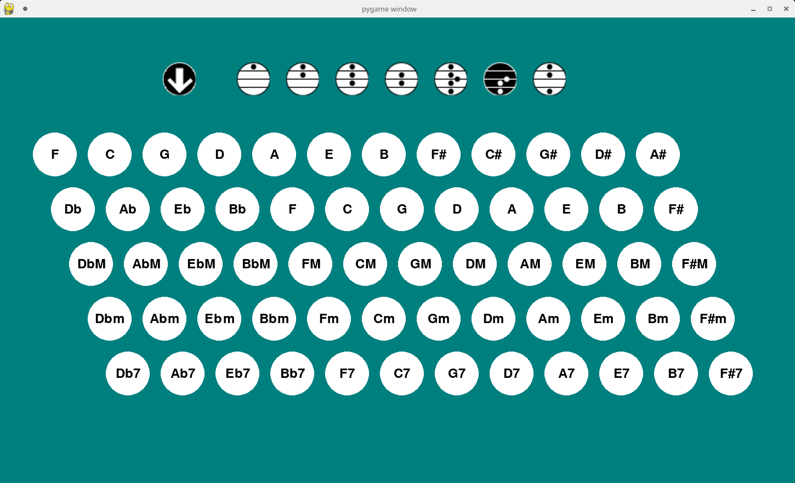
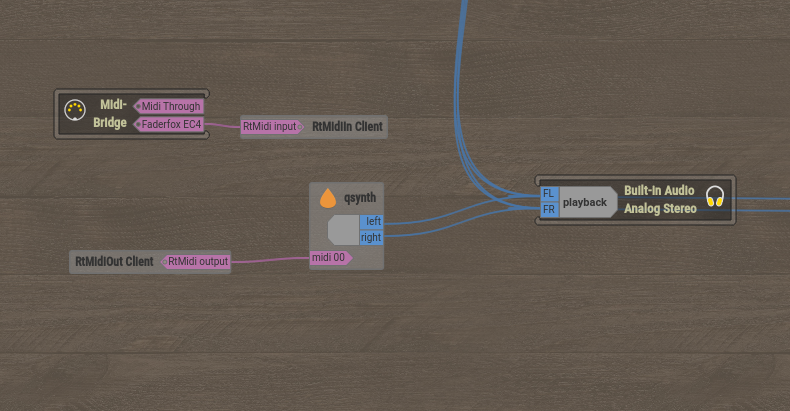
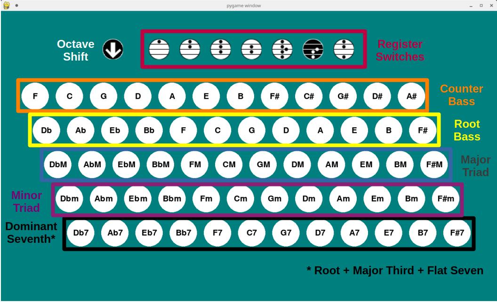
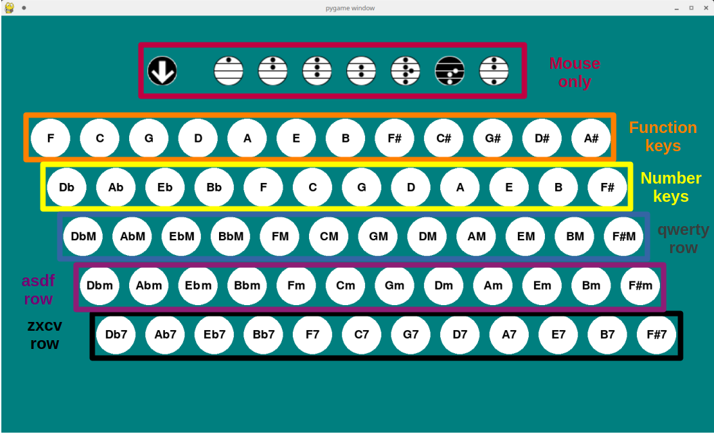

Info on the accordion stradella layout that this emulates can be found here.
Create a python virtual environment with your tool of choice, and install the necessary libraries from the requirements.txt file:
pip install -r requirements.txt
Activate your virtual environment, and run conchord using python:
python conchord.py
Be aware that conchord is a MIDI instrument, and generates no sound of its own!
Conchord outputs software MIDI messages which can be sent to your software synthesizer of choice.
In the following diagram Ubuntu Studio (version 24+ for significantly less configuration challenges) provides connections between software MIDI 'devices' using the patchance program.

Here I'm using a MIDI controller (faderfox EC4) to provide MIDI expression control to conchord (labelled as RtMidiIn/Out Client), and outputting MIDI from conchord to the qsynth synthesizer, which generates the sounds sent to my speakers.
This relies on configuration of JACK and ALSA or pipewire servers that is provided out of the box in Ubuntu Studio 24+ (and probably some other linux distributions), but not by default for most linux distributions.
I haven't tested this on Windows yet. It might work, who knows what the magic of python is capable of.
By default conchord sends MIDI messages on MIDI channel 0.
Conchord also /listens/ for MIDI expression (CC 11) messages, by default on channel 0. It will interpret the value of these messages as the velocity to play notes with.
Both the input and output MIDI channels can be changed manually in conchord.py
Conchord is fully mouse controllable, although that's an awful way to control it. Nevertheless it does make it easier to get familiar with the layout and functions, illustrated below:

The top row contains the Octave Shift button and the Register Switches. For information on the function of the Register Switches see here. Since it is a virtual accordion, conchord emulates additional reed ranks by adding duplicates of the button's notes in higher or lower octaves. The characteristic contralto sound/detuned-reed interaction can't be emulated in MIDI, so conchord simply doubles the tenor line to add more body to the sound (if a contralto register is selected).
The Octave Shift button is not present on a real stradella layout, but I've added it because different MIDI voices sound better at higher or lower octaves. When the Octave Shift is on (background black, default), all notes are shifted down an octave compared to when it is off (background white).
The third row contains the Root Bass notes. Pressing any of these buttons plays a single note (which may be doubled at higher or lower octaves, according to the selected register switch). This note is also the Root note of the chord buttons the rows below.
The notes in the second row are a major third above the Root Bass notes that they correspond to. Pressing any of these buttons plays a single note (which may be doubled at higher or lower octaves, according to the selected register switch).
The buttons on the fourth row play a major triad based on the Root Bass above it i.e. root + major third + major fifth. Each note in this chord may be doubled at higher or lower octaves, according to the selected register switch).
The buttons on the fourth row play a minor triad based on the Root Bass above it i.e. root + minor third + major fifth. Each note in this chord may be doubled at higher or lower octaves, according to the selected register switch).
The buttons on the fourth row play a dominant seventh based on the Root Bass above it. This seventh is missing the major fifth i.e. root + minor third + flat seventh. Each note in this chord may be doubled at higher or lower octaves, according to the selected register switch).
All of the note buttons (second row down) are mapped to keyboard buttons (UK QWERTY layout):

The counter bass row is controlled using the function keys (F1 - F12).
The root bass row is controlled using the number row (1 - =)
The major triad row is controlled using the qwerty row (q - ])
The minor triad row is controlled using the asdf row (a - #)
The dominant seventh row is controlled using the zxcv row (z - ?). Since this row is shorter than the others, there are no keys for B7 and F#7, and they can only be played by mouse.